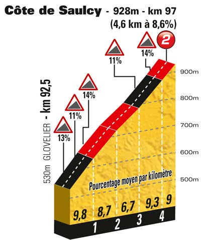
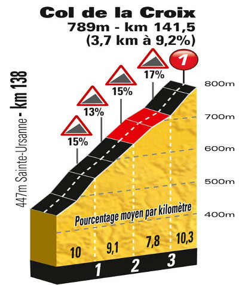

- Km 20.0 - Côte de Bondeval - 4.4 km de montée à 3.9 % - Catégorie 4
- Km 32.0 - Côte du Passage de la Douleur - 3.8 km de montée à 6.4 % - Catégorie 3
- Km 50.0 - Côte de Maison-Rouge - 7.9 km de montée à 5 % - Catégorie 2
- Km 73.0 - Côte de Saignelégier - 7.8 km de montée à 6.1 % - Catégorie 2
- Km 97.0 - Côte de Saulcy - 4.6 km de montée à 8.6 % - Catégorie 2
- Km 130.5 - Côte de la Caquerelle (834 m) - 4.3 km de montée à 7.6 % - Catégorie 2
- Km 141.5 - Col de la Croix (789 m) - 3.7 km de montée à 9.2 % - Catégorie 1

|